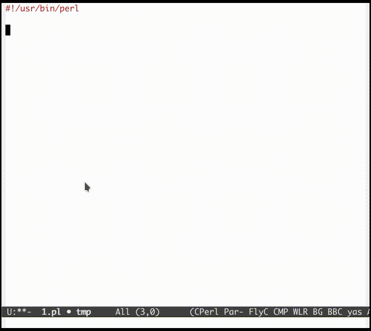

Automating bash/perl arguments handling in Emacs
Programming is mostly about 3 things:
- What is your input?
- What is your output?
- How do you compute from your input to your output?
Now, when writing bash or perl scripts, often you need to get your input from command line arguments, and you need to do complex argument handling if you want it to be flexible and user friendly.
I have boiled it down to a very simple and terse way in Emacs. For e.g., if I want to handle 2 arguments like this: --[no-]debug --serial 123456, I need only type Getopt M-tab ddebug s:serial M-s g. Here's a screencast of me writing the script:

Here's the detailed steps:
- Type
Getopt, which is a yasnippet in my emacs environment. Expand it (typing
M-tab) with yasnippet to this, where $0 is the point after expansion:## start code-generator "^\\s *#\\s *"
# generate-getopt $0
## end code-generator
## start generated code
## end generated codeStart inputing the argument spec
For e.g., if I want these options:
- A boolean option “debug”, which can be input with
-dor--debug(and toggled with--no-debug) - An option “serial” that requires an argument, which can be input with
-s SERIALor--serial SERIAL
I need only input
ddebug s:serial, making it like this:## start code-generator "^\\s *#\\s *"
# generate-getopt ddebug s:serial
## end code-generator
## start generated code
## end generated code- A boolean option “debug”, which can be input with
Type a short cut key
M-s g(here the 2 keyssandgmeans Sourcecode Generation), and ta-da, I suddenly get the complete bash argument handling script (help include!):
## start code-generator "^\\s *#\\s *"
# generate-getopt ddebug s:serial
## end code-generator
## start generated code
TEMP=$( getopt -o ds:h \
--long debug,serial:,help,no-debug \
-n $(basename -- $0) -- "$@")
declare debug=false
declare serial=
eval set -- "$TEMP"
while true; do
case "$1" in
-d|--debug|--no-debug)
if test "$1" = --no-debug; then
debug=false
else
debug=true
fi
shift
;;
-s|--serial)
serial=$2
shift 2
;;
-h|--help)
set +x
echo -e
echo
echo Options and arguments:
printf %06s '-d, '
printf %-24s '--[no-]debug'
echo
printf %06s '-s, '
printf %-24s '--serial=SERIAL'
echo
exit
shift
;;
--)
shift
break
;;
*)
die "internal error"
;;
esac
done
## end generated code
If I save the above script in a file named ./test.sh, I can print the script's usage with ./test.sh -h:
$bash ./test.sh -h
Options and arguments:
-d, --[no-]debug
-s, --serial=SERIAL
0.1 Change it to do perl argument handling
I do exactly the same things (Getopt M-tab ddebug s:serial M-s g) as above, except this time it's in a perl-mode buffer.
The perl-mode's Getopt snippet will expand differently by adding -s perl:
## start code-generator "^\\s *#\\s *"
# generate-getopt -s perl ddebug s:serial
## end code-generator
## start generated code
## end generated code
After I press M-s g for Sourcecode Generation, I get this wonderful perl argument handling script:
## start code-generator "^\\s *#\\s *"
# generate-getopt -s perl ddebug s:serial
## end code-generator
## start generated code
use Getopt::Long;
my $debug = 0;
my $serial = '';
GetOptions (
'debug|d!' => \$debug,
'serial|s=s' => \$serial,
'help|h!' => \&handler_help,
);
sub handler_help {
print ;
print "\n\n选项和参数：\n";
printf "%6s", '-d, ';
printf "%-24s", '--[no]debug';
if (length('--[no]debug') > 24 and length() > 0) {
print "\n";
printf "%30s", "";
}
printf "%s", ;
print "\n";
printf "%6s", '-s, ';
printf "%-24s", '--serial=SERIAL';
if (length('--serial=SERIAL') > 24 and length() > 0) {
print "\n";
printf "%30s", "";
}
printf "%s", ;
print "\n";
exit(0);
}
## end generated code
And I can save it in a test.pl and test it with perl ./test.pl -h:
$perl test.pl -h
选项和参数：
-d, --[no]debug
-s, --serial=SERIAL
0.2 Feature list
- Argument spec is from
man getopt(3), where:after a character means required argument. Allow to add default value:
generate-getopt s:serial=12345678
Allow to add help for the whole script and each option with '?':
generate-getopt \
'?"This script makes argument handling piece of cake."' \
s:serial=12345678 '?"Specify your serial number."'After code generation, if you test with
--help, output is like:
This script makes argument handling piece of cake.
Options and arguments:
-s, --serial=SERIAL Specify your serial number.Allows array type options: simply specify the argument with
='()':generate-getopt \
'?"This script makes argument handling piece of cake."' \
s:serial='()' '?"Specify your serial number."'By default, the argument variable name come from changing
-in the spec to_:s:serial-numberwill allow you to specify--serial-numebr=abcxyz, and in the script, you get a variableserial_numberwhose value isabcxyz.You can also add a prefix with
-p preif you need to avoid variable namespace clash, for e.g., this will get you a variable namedbhj_serial_numberinstead of serial_number:generate-getopt -p bhj s:serial-number
1 Implementation
All code is in my system-config project and its sub-projects.
But in case you are lost, here's some explanations.
1.1 Getopt is a yasnippet both in my sh-mode and perl-mode:
This is for sh-mode:
# -*- mode: snippet -*-
# key: Getopt
# name: Getopt
# --
## start code-generator "^\\\\s *#\\\\s *"
# generate-getopt ${1:ggnu p:phone}
## end code-generator
## start generated code
## end generated codeThis is for perl-mode (only added a
-s perlfrom sh-mode):# -*- mode: snippet -*-
# key: Getopt
# name: Getopt
# --
## start code-generator "^\\\\s *#\\\\s *"
# generate-getopt -s perl ${1:ggnu p:phone}
## end code-generator
## start generated code
## end generated code
1.2 code-generator and generated code
The strange commented text above is for Emacs lisp command bhj-do-code-generation.
It works by extracting the “code generator”, discard the extra comment character, run it, play its output into “generated code”, and indent it.
It's kind of like org-mode's inserting “Results of evaluation” back into the current buffer.
1.3 generate-getopt
This script is written with literate programming in org-mode (it's Chinese ).
).
The Bash style getopt is written a long time ago, and the code is quite messy.
The Perl style getopt is added recently, where I tried to use a script inspired by ANTLR's string-template, and the code is a lot better.